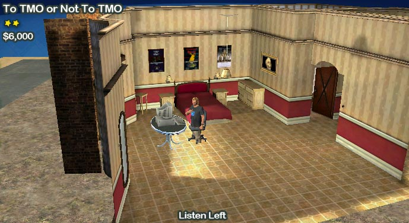

|
| Home | The Movie | Cast & Crew | Soundtrack | How-To Guide | Screenshots | Riley Entertainment |
Sets-as-a-Prop
This is both a modding and filming technique. Several of the The Movies fan sites have made all of the game's sets available as props. Once you have a set-as-a-prop, you can then film your scenes on the Blue-Screen set. Several The Movies fan sites also have variations of the Blue-Screen set available that give you a more expansive area to work with.
When using the stock scenes, it can often be difficult to make a character seemlessly travel from one place on the set to another. This technique is useful because it removes these restrictions on where your actors stand or move around on the set. Choose the desired Blue-Screen variation, choose the scene, and then move and rotate the set around your actors!
In the film:
This technique was used throughout the vast majority of To TMO or Not To TMO, from the opening scene to the end. In some cases, the prop was raised to make it look like TMOMovieMaker was still sitting in his chair. Many subtle variations of the bedroom prop were created: with and without the computer (since the Computer User scene adds these in as props), and with a variety of images on the computer screen.

Modified bedroom prop, positioned and rotated to give the illusion TMOMovieMaker is sitting.
This shot uses my "Empty Space" set, available in my thread on the Mod Showcase forum.